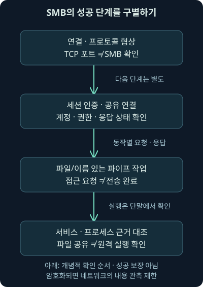
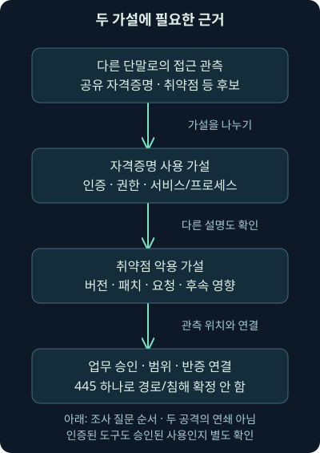
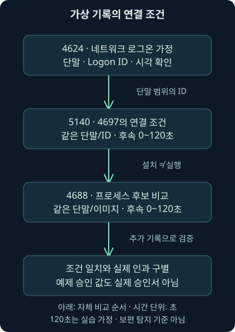

SMB: 파일 공유·인증·원격 실행의 증거 구별하기
둘째 날 16강. SMB 연결·파일 접근·서비스 실행·취약점 가설을 구별하고 가상 네트워크·로그 자료의 증거 범위를 비교합니다.
1. 파일 서버의 445번 포트에 접속하면 침해일까요?
workstation-a에서 파일 서버로 통신이 발생했습니다. 목적지 포트는 TCP 445이고 계정 로그온 기록도 보입니다. “공격자가 옆 서버로 이동했다”라고 적기 전에 질문을 조금 나눠보겠습니다. 파일 공유에 필요한 정상 통신일 수도 있고, 계정 오용이나 취약점 악용의 일부일 수도 있습니다.
15강에서는 사건 주소를 당시 단말 후보와 연결했습니다. 이번에는 그 후보가 다른 서버에 접근했을 때 연결·인증·공유·파일 작업·실행의 증거를 구별합니다. 둘째 날 16강의 범위는 SMB의 역할, 판본 협상과 보호, 공유 자격증명의 위험, 두 공격 가설, 실제 조사에서 연결할 로그입니다.
모든 주소·계정 관계·파일 경로·자료는 독립적인 가상 사례입니다. 이번에는 SMB 패킷이나 Windows 로그를 실제 수집·분석하지 않았습니다. 실제 수행한 것은 제공된 가상 JSON 주장들의 조건 비교이며, SMB 접속·PsExec·서비스 생성·원본 워크북·VM을 실행한 결과가 아닙니다.
2. 건물에 들어온 것과 서류를 꺼낸 것은 다릅니다
회사 건물의 출입구를 통과했다고 모든 보관함을 열 수 있는 것은 아닙니다. 신분 확인을 받고, 사용할 부서의 공간에 들어가고, 특정 서류에 대한 권한을 확인받는 단계가 이어집니다. 서류를 가져왔다고 그 서류에 적힌 프로그램을 실행한 것도 아닙니다.
SMB, Server Message Block은 네트워크의 파일·공유 자원에 접근하는 프로토콜입니다. Windows 파일 공유에 널리 쓰이며 Linux의 Samba 같은 구현도 있습니다. “Windows에서만 가능하니 다른 운영체제와의 통신은 SMB가 아니다”라고 가정하지 않습니다.
건물 비유와 실제 SMB가 다른 점도 있습니다. 한 연결에 여러 작업이 오갈 수 있고 세션·공유·파일의 식별값이 각각 있습니다. 인증 주체·권한·작업 응답을 단계별로 읽어야 하며, GUI 화면으로 사람이 직접 로그인한 모습과 같은 것은 아닙니다.
3. 공유 경로는 서버와 공유 이름을 나눠 가리킵니다
가상 경로 \\fileserver.sender.example\reports를 생각해 보세요. 앞의 서버 이름은 어느 서버에 접근할지, 뒤의 reports는 그 서버가 공개한 어느 공유인지 나타냅니다. 이 경로는 문서용 이름이며 실제로 접속하지 않았습니다.
공유, share는 네트워크에서 접근하도록 내놓은 자원의 이름입니다. 공유에 접근할 권한과 실제 파일 시스템의 파일·폴더 권한을 함께 확인해야 합니다. 서버에 계정이 있다는 사실 하나가 모든 공유의 읽기·쓰기·관리 권한을 주지는 않습니다.
SMB를 쓰려면 언제나 관리자여야 한다는 설명도 맞지 않습니다. 일반 사용자가 권한을 받아 문서를 읽는 것은 흔한 정상 사용입니다. 관리 공유와 원격 서비스 생성 같은 행위가 높은 권한을 요구하는 상황을 일반 파일 접근과 구별해야 합니다.
4. 연결·협상·인증·공유 연결을 차례로 읽습니다
먼저 네트워크 경로가 열려 있어야 합니다. 그 뒤 협상, negotiation에서 통신할 프로토콜 판본과 기능을 맞춥니다. SMB가 협상하는 세부 판본을 dialect, 방언 또는 세부 판본이라고 부릅니다.
Session Setup은 인증을 거쳐 세션을 만드는 단계이고, Tree Connect는 특정 공유에 연결하는 단계입니다. 그 뒤 파일 열기·읽기·쓰기 같은 작업이 이어질 수 있습니다. 요청이 있었다는 사실과 성공 응답·실제 후속 작업은 구별합니다.
2026년 11월 7일 Microsoft의 단계별 장애 설명을 대조했습니다. 협상이 성공해도 인증에서, 인증이 성공해도 공유 연결에서 실패할 수 있습니다. 따라서 앞 단계의 성공을 다음 단계의 성공으로 복사하지 않습니다. 협상·세션·공유 연결의 구분

5. 포트와 작업 이름은 무엇을 증명할까요?
TCP 445는 SMB를 찾을 때 유용한 기본 단서입니다. 하지만 그 포트로 패킷이 오갔다는 사실만으로 실제 SMB 협상·인증·파일 복사가 확인되는 것은 아닙니다. 방화벽의 허용 기록도 서버 애플리케이션이 작업을 완료했다는 기록과 다릅니다.
파일 열기 요청의 이름인 CREATE를 봤다고 항상 새 파일이 생성됐다고 읽지도 않습니다. 열기 방식·접근 대상·응답 결과를 봐야 합니다. READ·WRITE 역시 요청 길이와 실제 응답·상태를 비교해야 합니다. SMB의 이름 있는 파이프를 통한 통신은 보통 문서 파일을 읽는 것과 다른 기능에 연결될 수 있습니다.
이름 있는 파이프, named pipe는 프로세스 사이의 통신에 이름을 붙여 접근하는 기능입니다. 이를 통해 다른 원격 관리 절차가 연결될 수 있다는 사실과, 패킷 하나에 모든 원격 실행의 의미가 들어 있다는 설명은 다릅니다. 실행 여부는 단말의 근거와 연결해야 합니다.
6. 판본의 숫자와 운영체제 이름을 같은 말로 쓰지 않습니다
SMB1·CIFS라는 오래된 용어와 SMB2·SMB3 계열은 구별합니다. CIFS는 오래된 SMB 계열을 설명할 때 쓰이는 이름이며 별도의 최신 보호 기능을 뜻하지 않습니다. 같은 세부 판본을 지원해도 운영체제·구현·정책에 따라 보안 기능과 기본값이 다를 수 있습니다.
다음 표는 역사적 세대와 세부 표기를 비교하기 위한 것입니다. 운영체제 목록만 보고 실제 선택 판본을 관측했다고 말하지 않습니다. 클라이언트가 제시한 목록과 서버가 선택한 응답·현재 정책을 봐야 합니다.
| 세대·세부 판본 | 이해할 연결 | 주의할 해석 |
|---|---|---|
| SMB1·CIFS | 오래된 파일 공유 세대 | 현대 환경에서 제거·의존성 전환을 검토할 대상 |
| SMB 2.0.2 | Vista·Server 2008 세대와 연결되는 변화 | SMB1과 같은 형식으로 가정하지 않음 |
| SMB 2.1 | Windows 7·Server 2008 R2 세대 | 실제 협상값과 구현을 확인 |
| SMB 3.0·3.0.2 | Windows 8/8.1·Server 2012/2012 R2 세대 | SMB3 보호 기능의 지원·설정은 별도 |
| SMB 3.1.1 | Windows 10·Server 2016 이후 여러 세대 | 3.1이라고 줄여 세부 판본을 바꾸지 않음 |
Microsoft는 여러 Windows 판본이 3.1.1을 사용하면서도 기능을 추가한다고 설명합니다. 2026년 11월 7일 파일 공유 개요와 판본 관리 문서를 확인했으며, 이 표의 마지막 숫자를 영구적인 최신 버전이라고 부르지 않습니다. SMB 파일 공유 개요, 판본 협상과 관리
7. SMB1을 줄이는 일과 SMB2 스위치를 끄는 일은 다릅니다
오래된 SMB1 의존성을 조사하고 제거하는 원칙은 여전히 중요합니다. 다만 오래된 장비·애플리케이션의 의존성, 클라이언트와 서버의 역할, 배포 검증을 확인해야 합니다. 이번 강의에서는 실제 기능이나 정책을 변경하지 않았습니다.
“SMB3만 남기려면 SMB2를 꺼라”라는 말을 Windows의 특정 설정에 바로 대입하면 문제가 생깁니다. Microsoft는 SMB2와 SMB3가 같은 스택을 공유해 해당 활성화 설정이 함께 영향을 준다고 설명합니다. 스택은 프로토콜 처리를 함께 담당하는 구현 구조를 뜻합니다.
지원 환경에서는 최소·최대 dialect 정책 같은 별도 기능을 확인해야 합니다. 확인한 관리 문서는 이 기능의 적용 범위를 Windows 11 24H2와 Windows Server 2025부터로 설명합니다. 문서의 적용 운영체제·역할·설정 방식이 서로 다르므로 오래된 레지스트리 조각을 보편 권고로 복사하지 않습니다. SMB2·SMB3 설정의 관계
8. 협상한 판본·서명·암호화는 서로 다른 관측입니다
서명, signing은 통신 메시지의 무결성과 세션의 주체 관계를 보호하는 기능이고, 암호화, encryption는 내용을 노출되지 않게 보호하는 기능입니다. SMB3라는 숫자가 보였다고 모든 공유의 모든 내용이 암호화돼 있었다고 단정하지 않습니다.
암호화가 적용된 구간에서는 수집한 네트워크 자료에 읽을 수 있는 파일명·내용이 없을 수 있습니다. 반대로 서명만 적용한 통신에서 내용 비밀성까지 같은 방식으로 보장됐다고 말하지 않습니다. 협상 가능 기능, 실제 세션·공유의 적용, 수집 위치를 나눠 확인합니다.
Microsoft의 SMB 보안 설명은 공유·서버 수준의 암호화 설정과 요구 조건을 구별합니다. 2026년 11월 7일 해당 문서를 대조했습니다. 보안 설정의 존재는 정상 계정의 오용·악성 파일 자체를 모두 막는 보장이 아닙니다. SMB 보안 기능과 적용 범위
9. 현재 서명 기본값은 운영체제와 역할에 따라 다릅니다
오래된 환경에서 관측한 기본값을 새 Windows에도 그대로 대입하지 않습니다. Microsoft의 구체적인 서명 문서는 Windows 11 24H2의 Enterprise·Pro·Education에 송신·수신 요구, Windows Server 2025에는 송신 요구를 설명합니다. 24H2 Home은 같은 요구 기본값으로 묶지 않습니다.
여기서 송신 요구는 SMB 클라이언트 역할, 수신 요구는 SMB 서버 역할에 관한 것입니다. 같은 컴퓨터도 두 역할을 할 수 있습니다. “2025니까 양방향 모두 필수”라는 요약 대신 실제 역할·에디션·정책과 연결하세요.
2026년 11월 7일 확인한 상세 서명 문서를 기준으로 적었습니다. 소개 페이지의 넓은 요약과 표현이 달라 보일 때에도 상세 범위와 실제 설정을 우선 대조해야 합니다. 연결 실패를 해결하려고 보호 기능부터 끄는 것이 이번 강의의 작업은 아닙니다. 에디션·역할별 서명 요구
10. 인터넷의 TCP 445와 SMB over QUIC도 구별합니다
일반적인 내부 파일 공유용 TCP 445를 불필요하게 인터넷에 노출하지 않고 필요한 경로를 제한하는 원칙은 유지합니다. 내부에서도 모든 직원 단말끼리 관리 접근을 허용할 필요가 있는지 별도로 봐야 합니다.
현재에는 SMB over QUIC라는 별도 전송 방식도 있습니다. QUIC은 UDP 위에서 보안 연결과 스트림을 제공하는 전송 기술이고, 이 SMB 기능은 기본 UDP 443의 TLS 1.3 터널을 사용합니다. 따라서 모든 SMB가 TCP 445에만 나타난다는 탐지 가정은 부족합니다.
Microsoft의 적용 범위는 Windows Server 2022 Datacenter: Azure Edition, Windows Server 2025의 해당 서버 기능과 Windows 11 클라이언트 등을 구별하며 관리자가 활성화해야 합니다. 2026년 11월 7일 이 범위와 기본 포트를 확인했습니다. 실제 배포·인증서·클라이언트 요구·대체 포트 정책은 별도 검증해야 하며, 이번에 QUIC을 구성한 것은 아닙니다. SMB over QUIC의 범위
11. 같은 관리자 암호를 여러 단말에 쓰면 왜 위험할까요?
한 단말의 관리 자격증명이 유출됐는데 다른 단말들도 같은 자격증명을 받아들인다고 합시다. 네트워크 경로와 원격 관리 권한까지 열려 있으면 첫 단말의 문제가 다른 단말로 이어질 수 있습니다. 이것이 측면 이동, lateral movement의 한 경로입니다.
여기서 필요한 조건을 빼먹지 마세요. 같은 이름만으로 충분한 것은 아니며 실제 인증 자료, 계정 범위, 대상 권한, 원격 정책, 도달 가능한 경로가 관련됩니다. SMB 포트가 열린 모든 단말이 자동으로 관리자로 바뀌는 것은 아닙니다.
기록에 정상 계정 이름이 있다고 정상 사람의 승인을 확인한 것도 아닙니다. 사용 시각·출발 단말·접근 목적·인증 방식·관리 작업의 승인과 계정 탈취 단서를 대조해야 합니다. 앞선 메일 강의의 “인증 성공과 정상 의도는 별도”라는 원리가 이어집니다.
12. 파일 공유와 원격 서비스 실행을 한 기능으로 뭉치지 않습니다
관리 도구인 PsExec은 원격 시스템에서 프로그램을 실행하는 기능을 제공합니다. SMB를 통한 자원 접근과 Windows의 원격 서비스 관리 같은 절차가 연결될 수 있지만, SMB의 모든 파일 읽기를 곧 원격 명령 실행이라고 설명하면 안 됩니다.
서비스는 운영체제가 관리하는 백그라운드 작업의 구성이고, 프로세스는 실제로 실행 중인 프로그램의 인스턴스입니다. 서비스가 설치됐다는 기록과 해당 프로그램의 프로세스가 만들어졌다는 기록도 다른 단계입니다. 관리 도구의 파일명·서비스명이 환경마다 고정된다고 가정하지 않습니다.
2026년 11월 7일 Microsoft의 PsExec 설명에서 원격 실행·서비스 관련 기능을 확인했습니다. 이 도구 이름은 조사 맥락을 이해하기 위한 것이며 설치·원격 접속·실행하지 않았습니다. 같은 기능의 사용이 승인된 관리 작업인지 오용인지는 증거를 더 확인해야 합니다. PsExec의 관리 기능
13. 자격증명 오용과 서비스 취약점 악용은 다른 가설입니다
첫 번째 가설은 유효한 자격증명으로 인증한 뒤 권한 있는 기능을 오용했다는 것입니다. 이때는 인증·권한·공유·서비스·프로세스·승인 관계가 중요합니다. 패치가 설치됐다는 사실만으로 계정 오용 가능성이 사라지는 것은 아닙니다.
두 번째 가설은 서비스 구현의 취약점을 이용했다는 것입니다. 적용 버전·패치·요청 내용·도구의 탐지 근거·후속 영향이 필요합니다. 목적지 445 하나나 오래된 공격 이름 하나만으로 어떤 취약점이 성공했다고 특정하지 않습니다.
두 경로는 모두 조사 후보이며 실제 사건에서는 다른 원격 관리 경로와 섞일 수도 있습니다. 그림은 두 공격이 반드시 연속으로 일어나는 순서가 아니라 분석할 질문을 나눠 보여줍니다.

14. 오래된 공격 사례는 시점과 조건을 붙여 읽습니다
EternalBlue·WannaCry·NotPetya 같은 이름은 SMB와 자격증명·네트워크 확산 위험을 이해하는 역사적 맥락입니다. 서로 다른 사건·도구가 모두 동일한 취약점 하나나 같은 조건으로만 움직였다고 합치지 않습니다. 과거 유출 도구의 개수를 현재 살아 있는 취약점 수로 옮기지도 않습니다.
Microsoft의 MS17-010은 2017년 3월 14일 공개된 SMBv1 서버 취약점 보안 업데이트입니다. 2026년 11월 7일 원래 권고의 영향 범위를 확인했습니다. 이 수정 공지를 현재 모든 Windows의 영구적인 최신 패치라고 표현하지 않습니다. 사건 당시 지원 상태·설치 업데이트·대상 구현을 확인해야 합니다. MS17-010의 원래 영향 범위
관리자 권한을 얻은 뒤에도 모든 로그인 사용자의 평문 암호를 언제나 가져올 수 있다는 절대적 설명은 피합니다. 운영체제의 자격증명 보호·인증 방식·보안 제품·권한과 상태에 따라 다릅니다. 이번에는 자격증명 도구를 실행하거나 메모리를 수집하지 않았습니다.
15. 로그는 번호보다 의미와 수집 조건이 먼저입니다
Windows의 이벤트 ID는 기록 종류를 구별하는 번호입니다. 단말의 Security 감사 로그를 실제로 수집했는지, 해당 감사 정책이 켜졌는지, 성공·실패 중 어떤 기록을 보존했는지 확인해야 합니다. 번호 문자열만 있는 자료와 신뢰할 수 있는 원본 이벤트는 다릅니다.
4624는 로그온 세션 생성의 성공 기록이고 타입 3은 네트워크 로그온입니다. 이것이 SMB만을 뜻하거나 대화형 데스크톱 로그인을 뜻하는 것은 아닙니다. 접근받은 대상 단말의 계정·출발지·시간·Logon ID를 봅니다. Logon ID는 그 단말의 로그온 세션을 연결하는 값이며 전사적으로 유일한 사람 번호가 아닙니다. 4624의 의미
5140은 공유 접근의 단서이고 5145는 요청한 접근이 허용될 수 있는지를 검사하는 더 상세한 맥락입니다. 이것만으로 파일 전체의 전송·유출을 단정하지 않습니다. 5145의 실패 기록 범위도 공유 수준과 파일 시스템 수준을 구별해야 합니다. 2026년 11월 7일 Microsoft의 두 감사 설명을 대조했습니다. 5140, 5145
16. 서비스 설치와 실제 실행을 다른 근거로 연결합니다
4697은 서비스 설치와 관련한 Security 감사 이벤트입니다. 4688은 프로세스 생성의 근거로 사용할 수 있습니다. 그러나 감사 설정·수집·보존이 없으면 해당 기록이 없을 수 있고, 명령줄은 별도 정책에 따라 빠질 수 있습니다. 서비스 설치 기록, 프로세스 명령줄 감사 조건
같은 단말에서 가까운 시각에 서비스 경로와 같은 이미지의 프로세스가 보이면 연결 가설을 지지할 수 있습니다. 이미지, image는 여기서 실행 파일을 가리키는 이름·경로를 뜻합니다. 같은 문자열과 시간만으로 앞선 원격 세션이 그 프로세스를 반드시 만들었다는 인과관계를 증명하지는 않습니다.
실무에서는 부모 프로세스·실행 계정·토큰·서비스 구성과 상태·파일 해시·EDR의 과정 기록·네트워크 세션 등을 대조합니다. EDR은 단말의 탐지·대응 자료를 수집하고 조사에 쓰는 체계입니다. 파일명은 같아도 내용이 다르거나 정상 작업이 동시에 실행됐을 수 있습니다.
17. 가상 조건 비교를 실제로 실행했습니다
여섯 가상 사례, 비교 프로그램, 안내를 제공합니다. Python 3.12.14 표준 라이브러리로 다음을 실행했습니다.
python compare_evidence.py cases.json같은 폴더에서 python은 실행기, compare_evidence.py는 실행할 프로그램, cases.json은 읽을 자료 경로입니다. 앞 강의의 같은 이름 파일과 내용이 다르므로 16강 폴더를 사용합니다. Windows 이벤트를 저장하는 EVTX 파일 형식을 읽는 파서는 아닙니다.
프로그램은 작성자가 정규화한 target·logon_id·time·image 등을 비교합니다. target은 대상 단말 가정, time은 시간대가 포함된 시각, image는 파일 경로 가정입니다. 원본 Windows 이벤트의 필드가 모두 이 이름·구조라고 주장하지 않습니다.
18. 조건을 좁혀도 실제 인과관계까지 계산되지는 않습니다
첫 조건은 4624·타입 3이라는 제공값입니다. 공유·서비스 조건은 같은 대상 단말·Logon ID이고 인증 가정 뒤 0~120초 안인지 비교합니다. 0 ≤ 후속 시각 - 앞선 시각 ≤ 120초에서 왼쪽은 역순을 제외하고 오른쪽은 자체 예제의 시간 범위를 정합니다.
프로세스 후보는 연결된 서비스 가정과 대상 단말·이미지 문자열이 같고 그 뒤 0~120초인지 비교합니다. 이 120초는 보편적인 공격 탐지 기준이 아닙니다. 시간 오차·지연·실제 업무에 맞춘 판단이 필요합니다.
프로그램은 flow의 IP를 실제 단말 이름과 대응시키거나 로그 원본의 진위·인증·프로토콜·원격 실행 원인을 확인하지 않습니다. 동일 파일 이름의 문자열 비교도 파일 내용의 동일성을 검증하지 않습니다. 조건 계산과 실제 사건 검증을 구별해야 합니다.

19. 여섯 결과를 나란히 놓으면 증거의 빈칸이 보입니다
다음 표는 실제 프로그램의 출력 의미를 정리한 것입니다. 원본 이벤트를 수집한 결과가 아니라 가상 입력 조건이 맞았는지 계산한 결과입니다. 네트워크 로그온·공유·서비스·프로세스라는 서로 다른 질문이 추가될 때 무엇이 바뀌는지 보세요.
| 사례 | 제공한 주장 | 실제 로컬 조건 비교의 의미 |
|---|---|---|
| C1 | 목적지 445의 통신만 | 인증·공유·서비스·프로세스 조건 모두 없음 |
| C2 | 로그온·같은 단말과 ID의 공유 | 공유 연결 조건만 추가로 맞음 |
| C3 | 공유·서비스·후속 동일 이미지 | 서비스 조건과 프로세스 시간·이름 후보도 맞음 |
| C4 | C3의 서비스 대상만 다른 단말 | 단말이 달라 서비스·프로세스 연결 조건 불일치 |
| C5 | 서비스 설치 주장까지, 프로세스 없음 | 설치 조건은 맞지만 프로세스 후보는 없음 |
| C6 | C3와 같은 주장, 업무 승인을 참으로 가정 | 연결 후보는 같으며 승인 가정만 다름 |
C3의 후보를 실제 원격 실행 확인이라고 쓰지 않습니다. 실제 SMB·Windows 이벤트·인과관계·자격증명 탈취는 출력에서 모두 미검증입니다. C6의 승인 스위치도 실제 승인서·사용자 확인을 대신하지 않습니다. 모든 사건 결론은 unresolved, 미해결로 남았습니다.
C4는 Logon ID가 같은 문자열이어도 다른 단말의 이벤트를 합치면 안 된다는 조건 변경입니다. C5는 설치와 실행을 분리합니다. 프로세스 자료가 없다는 사실은 수집 누락·감사 정책·범위 문제일 수도 있으므로 실제 미실행을 단정하지 않습니다.
20. Wireshark에서는 무엇부터 좁힐까요?
다음은 공식 필드 문서와 대조한 미실행 표시 필터 예시입니다. 이번 SMB 실습은 가상 JSON 비교이며 이 필터를 실제 PCAP에서 실행한 결과는 없습니다.
tcp.port == 445
smb2첫 줄은 출발지나 목적지 TCP 포트가 445인 패킷을 고르는 넓은 조건입니다. 실제 SMB라는 보장은 없고, 다른 전송·포트를 사용하는 SMB도 놓칠 수 있습니다. 두 번째 줄은 도구가 SMB2 계열로 해석한 내용을 보는 조건입니다. SMB3도 관련 해석 계열로 나타날 수 있으므로 표시 이름 하나를 OS 판본으로 바꾸지 않습니다.
협상·세션·공유·파일 요청의 응답과 상태, 재조립 설정을 차례로 확인합니다. 암호화·캡처 누락·다른 전송 방식이면 해당 내용이 보이지 않을 수 있습니다. 2026년 11월 7일 공식 SMB2 필드 참조의 프로토콜 표기 범위 1.0.0~4.6.9를 확인했으며 실제 설치판의 동작은 별도 검증 대상입니다. Wireshark SMB2 필드
21. 방어는 경로·자격증명·판본·관측을 함께 다룹니다
공유 관리자 자격증명을 줄이고 단말별 관리 비밀을 관리하면 한 단말의 유출이 다른 단말로 이어지는 조건을 줄일 수 있습니다. Microsoft의 Windows LAPS, Local Administrator Password Solution은 로컬 관리자 암호를 자동 관리·백업하는 기능입니다. 적용 대상·암호 접근 권한·백업 보호·운영 절차를 함께 확인해야 합니다. Windows LAPS의 범위
동시에 관리 출발지·대상·계정·공유를 정하고 불필요한 단말 간 통신을 제한합니다. 지원되는 판본·업데이트·서명·암호화와 감사 수집을 확인하되, 하나의 보호 기능만으로 모든 오용을 막았다고 보고하지 않습니다. 실제 환경을 바꾸는 작업은 이 강의에서 수행하지 않았습니다.
조사 메모는 “해당 구간에서 445 통신을 관측했다. 인증·공유·파일 작업·프로세스 중 확보한 근거는 여기까지이며, 대상 단말·승인·후속 영향은 추가 확인한다”처럼 범위를 적습니다. 다음 회차에서는 다른 원격 관리 통신에서도 같은 질문을 적용하겠습니다.
22. 복습: 접근·설치·실행의 차이를 설명해 보세요
질문 1. TCP 445가 보이면 SMB 침해가 확인됐나요?
해설: 포트는 단서입니다. 실제 프로토콜·작업·상태·승인·영향의 근거가 더 필요합니다.
질문 2. 일반 사용자가 SMB 공유를 읽으려면 반드시 관리자여야 하나요?
해설: 허용된 공유·파일 권한이 있으면 일반 사용자도 접근할 수 있습니다. 관리 기능의 높은 권한과 구별합니다.
질문 3. Session Setup 성공이면 Tree Connect도 성공했나요?
해설: 세션과 공유의 권한·응답은 다른 단계입니다. 앞 단계의 성공을 다음 단계에 복사하지 않습니다.
질문 4. CREATE 요청은 새 파일을 만들었다는 성공 기록인가요?
해설: 열기 방식·대상·응답을 봐야 합니다. 요청 이름만으로 새 파일 생성 완료를 단정하지 않습니다.
질문 5. 3.1.1을 쓰면 모든 운영체제의 기본값도 같나요?
해설: 동일 dialect에서도 구현·추가 기능·에디션·역할·정책이 다를 수 있습니다.
질문 6. Windows에서 SMB2를 끄면 SMB3만 남는다고 생각해도 되나요?
해설: 해당 설정은 공유 스택 때문에 함께 영향을 줄 수 있습니다. 지원 범위와 판본 제한 기능을 확인합니다.
질문 7. 서명이 적용되면 내용도 모두 암호화됐나요?
해설: 무결성과 내용 비밀성은 다른 보호입니다. 실제 세션·공유의 적용을 확인해야 합니다.
질문 8. Windows Server 2025의 서명 기본값을 무조건 송수신 모두로 적나요?
해설: 확인한 상세 문서는 송신 요구를 설명합니다. 클라이언트·서버 역할과 정책을 구별합니다.
질문 9. TCP 445가 없으면 SMB도 없나요?
해설: SMB over QUIC 같은 다른 전송이 있을 수 있습니다. 적용 환경·포트·수집 범위를 확인합니다.
질문 10. 정상 관리자 계정이 인증되면 정상 관리자의 승인도 확인됐나요?
해설: 계정 오용 가능성이 남습니다. 출발 단말·목적·업무 승인·후속 작업을 대조합니다.
질문 11. 패치가 있으면 자격증명을 이용한 오용도 불가능한가요?
해설: 취약점 수정과 권한 있는 기능의 오용은 다른 조건입니다. 인증·권한·경로 통제가 계속 필요합니다.
질문 12. 타입 3의 4624는 SMB 전용 또는 데스크톱 로그인인가요?
해설: 네트워크 로그온입니다. 프로토콜 전용 표시도 대화형 로그인 표시도 아닙니다.
질문 13. 다른 단말의 Logon ID가 같으면 연결해도 되나요?
해설: 단말 범위의 값입니다. C4처럼 대상 단말이 다르면 같은 세션이라고 합치지 않습니다.
질문 14. 4697이 있으면 그 서비스 프로그램도 실행됐나요?
해설: 설치와 실행은 다릅니다. C5는 설치 조건만 있고 프로세스 후보가 없습니다. 실제 수집 누락 가능성도 별도입니다.
질문 15. 120초 안의 같은 이미지면 원격 실행 인과관계가 증명되나요?
해설: 자체 시간·이름 조건의 후보입니다. 부모·계정·서비스·파일 내용 등 실제 연결 근거가 더 필요합니다.
질문 16. 승인 스위치를 참으로 바꾸면 실제 사용자의 승인이 검증됐나요?
해설: 가상 입력의 가정만 바뀝니다. C6도 실제 승인서·로그 원본·사건 결론을 확인한 것은 아닙니다.